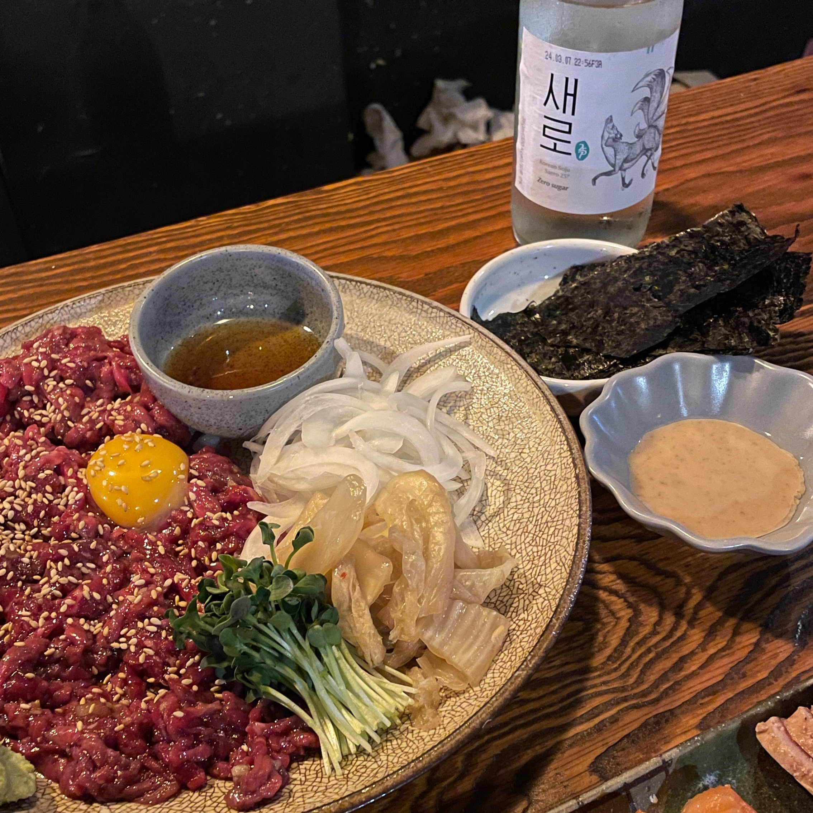

노금바리 라이프>
혼술 맛집 List>
자취요리 레시피>
꿀템 소개>
혼술 맛집 List
혼술 맛집리스트에 대한 정보를 전달드립니다.
네이버 지도 기준
'혼술'
검색 시
노출되는 리스트 우선으로 안내해 드려요😊
1. 모찌네 안마당
위치 : 불광역 7번출구 앞 (다이소 건물 뒤편)
주 메뉴 : 수육 전골, 파스타

2. 잔
위치 : 응암역 근처
주 메뉴 : 연어, 육회 등